HIST 270 · History of China · Chapter 18 · Lecture 1
Smoke and Gunboats
Opium Drained China's Silver, the Daoguang Court Chose to Crush the Trade, and Britain Answered with a War That Ended in the First Unequal Treaty
1800–1850 · Study Buddy edition
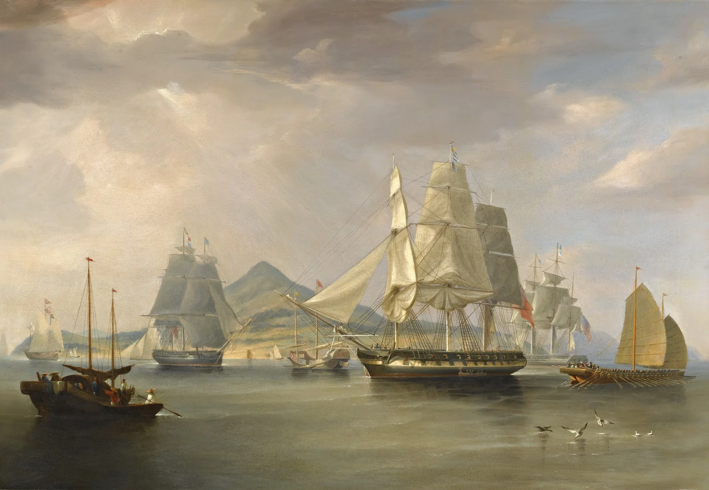
The Opium Ships at Lintin, China, 1824, by William John Huggins. Foreign "receiving ships" anchored off Lintin Island in the Pearl River estuary, where smugglers collected the chests. Public domain, Wikimedia Commons.
Q2 story · Humen, near Guangzhou · June 1839
Lin Zexu Had Five Hundred Men Destroy the Opium and Wash It into the Sea
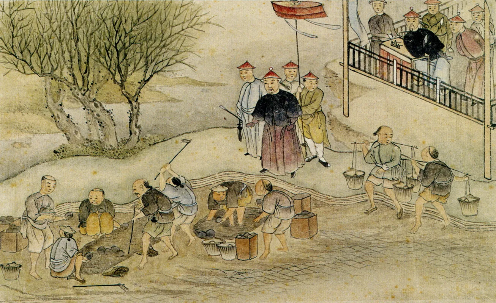
Commissioner Lin and the Destruction of the Opium in 1839, by a Chinese artist, 1800s, Hong Kong Museum of Art. Public domain, Wikimedia Commons.
Five hundred laborers worked for twenty-two days to destroy the seized opium.
They mixed it with salt and lime and washed it into the sea.
The 2.6 million pounds of opium had been surrendered by Western merchants after a six-week siege.
The destruction took place at Humen, at the mouth of the Pearl River, in June 1839.
Sources: Ebrey, Ch. 18, p. 317. Image: Hong Kong Museum of Art.
Recap · The Canton system · 1700s
Recap: Europeans Could Trade Only at Guangzhou, and Paid for Tea in Silver
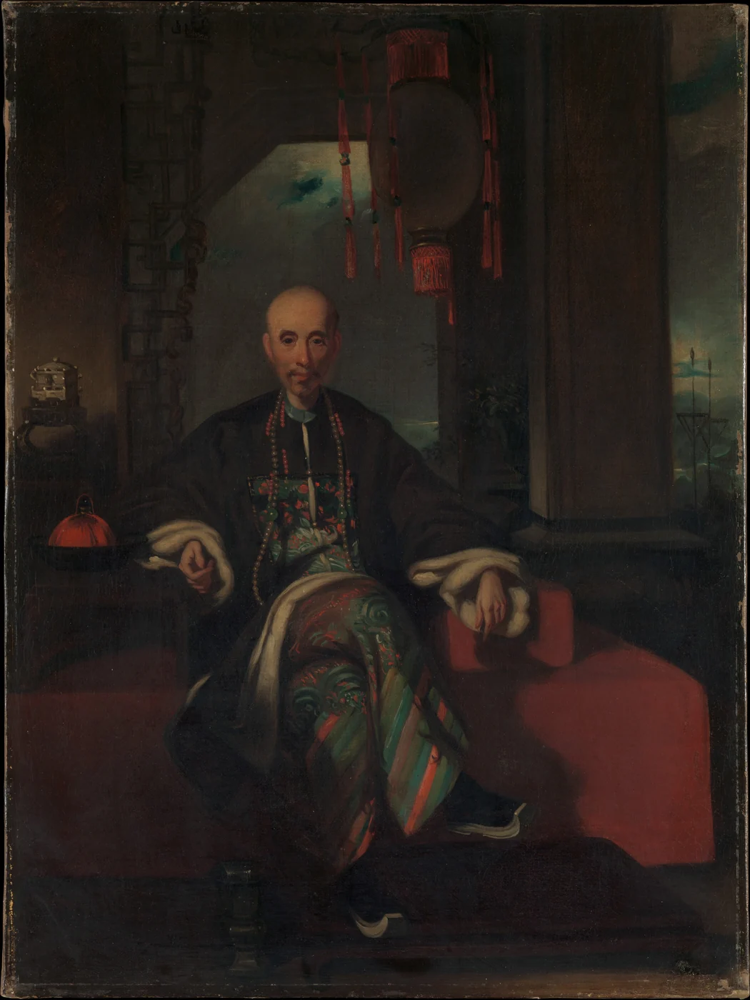
The hong merchant Houqua (Wu Bingjian, 1769–1843), one of the licensed merchants through whom all foreign trade passed. Esther Speakman, about 1843, Metropolitan Museum of Art. CC0, Wikimedia Commons.
Europeans were permitted to trade only at Guangzhou, and only through licensed Chinese merchants · Ch. 16 L3 · guangzhou-rules ↗
The balance of trade favored China, because the British paid for their tea in silver · Ch. 16 L3 · concept-balance ↗
When Macartney asked to change the system in 1793, the Qianlong emperor saw no reason to agree · Ch. 16 L3 · no-merit ↗
By the late 1700s, the British had found something the Chinese would buy: opium.
Sources: Ebrey, Ch. 18, p. 315; Ch. 16 L3 for the Canton system and Macartney.
Q2 story · Across China · 1700s–1831
Smoked in Pipes, an Old Medicine Became an Addiction That Reached the Imperial Clan
Video: Opium usage in China, Seek Learning on YouTube, 3:52. Watch on YouTube.
Opium had been used in China as a medicine for several centuries.
Once people learned to smoke the pure sap in pipes, it became an addictive drug.
In 1831 an investigation found addicts among the imperial clan, high officials, and bannermen.
The Qing banned producing and importing opium in 1800, and in 1813 punished smoking with a hundred blows.
Sources: Ebrey, Ch. 18, p. 316. Video: Opium usage in China, Seek Learning (YouTube, 3:52).
Q2 story · Bengal, British India · 1800s
In British India, the East India Company Grew the Opium and Private Traders Carried It
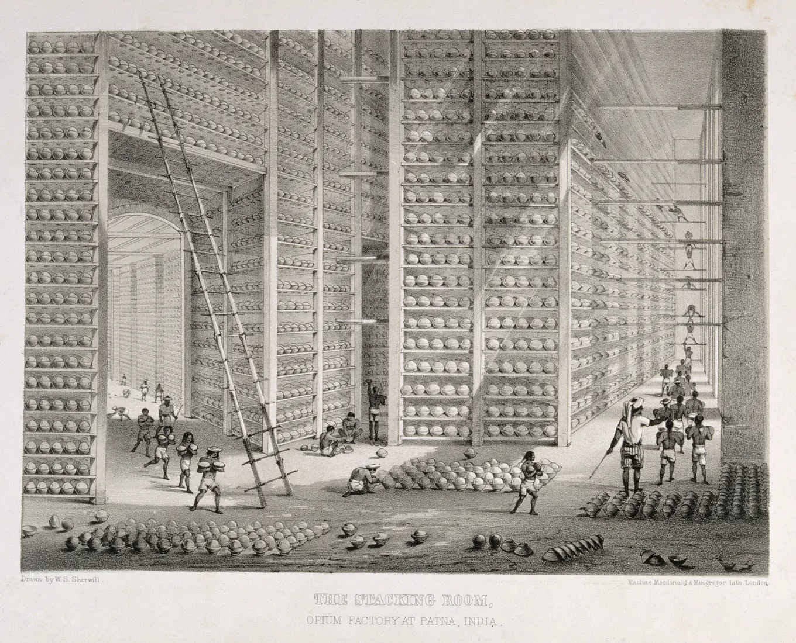
The stacking room of the opium factory at Patna, in British India. Lithograph after W. S. Sherwill, about 1850. Wellcome Collection, public domain, Wikimedia Commons.
The opium that the British brought to China was grown in India.
The East India Company invested heavily in planting and processing opium, and held a profitable monopoly.
Once China banned the trade, the Company stopped carrying opium itself.
Instead, licensed private traders, American as well as British, carried it to the China coast.
Sources: Ebrey, Ch. 18, pp. 316–317. Image: Wellcome Collection.
Q2 story · The Guangdong coast · 1810–1838
Smugglers and a Price War Raised Imports from 4,500 Chests to 40,000
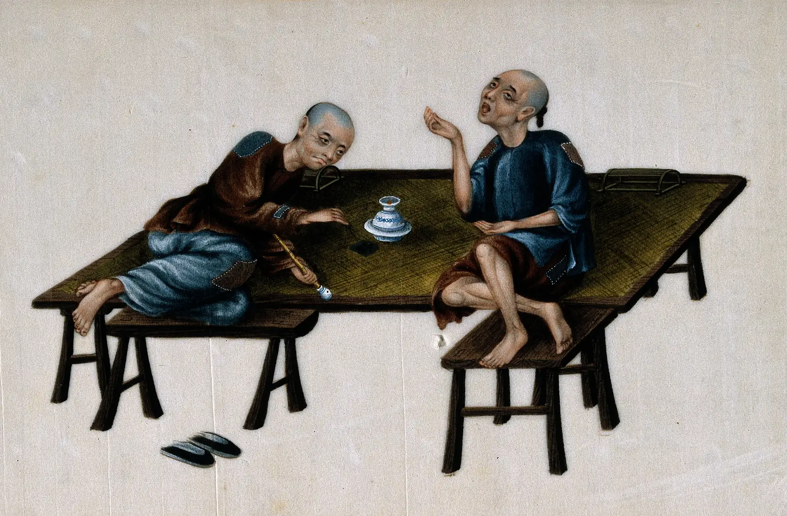
Two poor smokers at a plain table. Gouache on rice paper by a Chinese artist, 1800s, Wellcome Collection. CC BY 4.0, Wikimedia Commons.
Chinese smugglers bought opium from foreign ships anchored off the coast and passed it through middlemen.
By 1831, one to two hundred smugglers' boats worked the Guangdong coast.
A price war among the private traders drove prices down and spread addiction.
Imports rose from 4,500 chests in 1810 to 40,000 in 1838, enough for 2 million addicts.
Sources: Ebrey, Ch. 18, p. 317. Image: Wellcome Collection.
Q2 concept · Silver drain · 1820s–1830s
Concept: Now Silver Drained Out of China, and Farmers Paid the Price
Concept
Silver drain
A steady outflow of silver from a country, here because China was paying for more opium than it earned from tea and silk. Farmers felt it because taxes were set in silver but they were paid in copper coins, called cash.
The silver outflow grew from about 2 million ounces a year in the 1820s to about 9 million in the 1830s.
Taxes were assessed in silver, so the drain hurt farmers.
In 1800, paying a 1-ounce silver tax took about 1,500 copper cash; in 1830, about 2,700.
Sources: Ebrey, Ch. 18, p. 317; Ch. 16 L3 for the earlier balance of trade.
Q2 story · The Daoguang court · 1836–1838
The Daoguang Emperor Asked His Officials: Legalize Opium, or Stamp It Out?
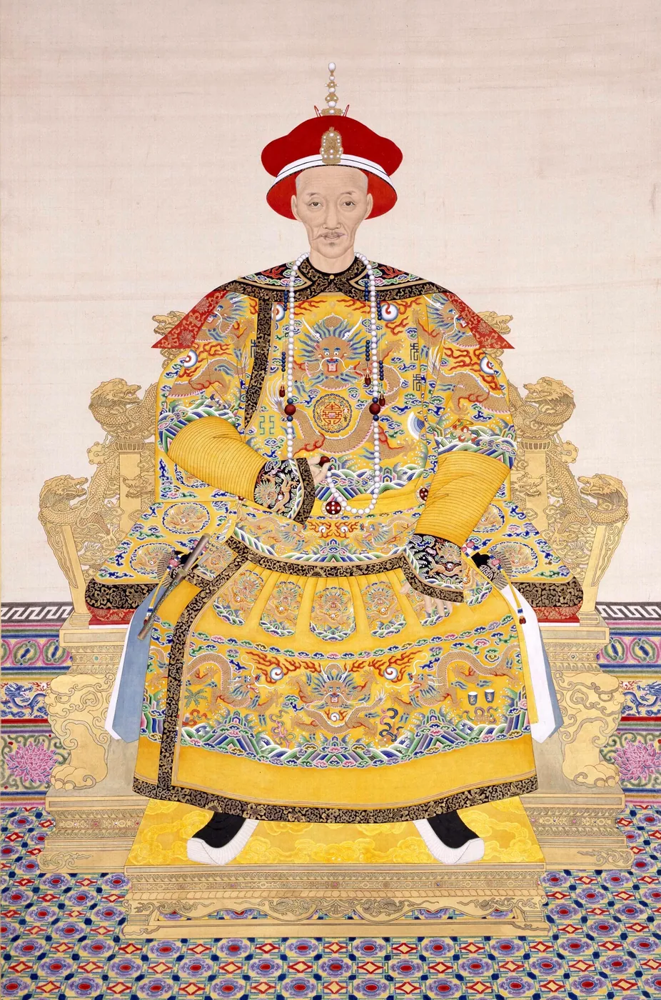
The Daoguang emperor (r. 1821–1850), court portrait, Palace Museum, Beijing. Public domain, Wikimedia Commons.
The Daoguang emperor called for a debate on how to deal with the crisis.
Some officials urged legalizing opium and taxing it, to raise revenue and price some users out.
Others insisted that an evil like opium had to be stopped.
The memorials were written by real officials: Xu Naiji for legalizing in 1836, Huang Juezi for harsh punishment in 1838.
Sources: Ebrey, Ch. 18, p. 317.
Q2 story · Beijing to Guangzhou · 1838–1839
Lin Zexu Argued for Going After the Sellers, and the Emperor Sent Him to Guangzhou
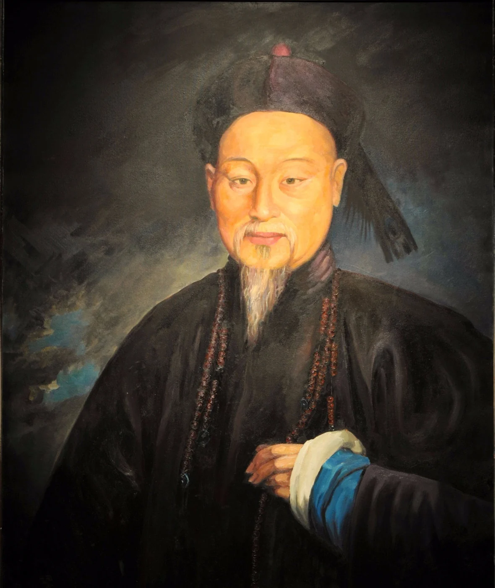
Lin Zexu (1785–1850), portrait attributed to the Guangzhou painter Lamqua, 1800s. Public domain, Wikimedia Commons.
Lin Zexu said the state should go after the importers and sellers, not the users.
Unless the trade was suppressed, he warned, the Qing would have no soldiers to fight and no funds for an army.
In late 1838 the emperor made him imperial commissioner, with full powers to end the trade.
In Guangzhou he arrested some 1,700 Chinese dealers and seized 70,000 opium pipes.
Sources: Ebrey, Ch. 18, p. 317.
Q2 story · The foreign factories, Guangzhou · March–May 1839
When the Merchants Refused, Lin Stopped All Trade and Besieged Their Enclave
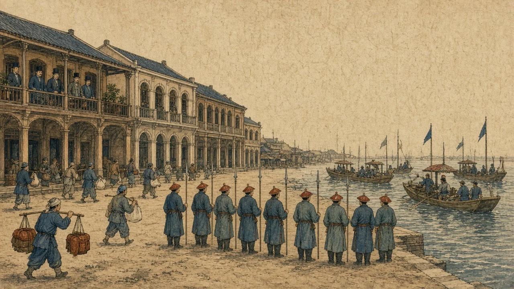
AI-generated illustration in a woodblock-print style, made for this deck: Qing soldiers ring the foreign factories at Guangzhou in spring 1839, as the Chinese servants leave and the foreign merchants watch from their verandas. An interpretation, not a historical source.
Lin demanded that foreign firms hand over their opium, offering tea in exchange.
When appeals failed, he stopped all trade and besieged the Western merchants' enclave.
After six weeks the merchants gave up their opium, some 2.6 million pounds.
Lin also wrote to Queen Victoria: "Let us ask, where is your conscience?"
Sources: Ebrey, Ch. 18, p. 317; Lin's letter, trans. Teng and Fairbank, China's Response to the West (1954). Image: AI-generated interpretation.
Reading Guide · Review Question 2
Reading Guide · Review Question 2
Review Question 2
Why did the opium trade become such a serious crisis for the Qing government, and how did Lin Zexu attempt to solve the problem?
Britain Called Lin's Act an Affront and Sent a War Fleet
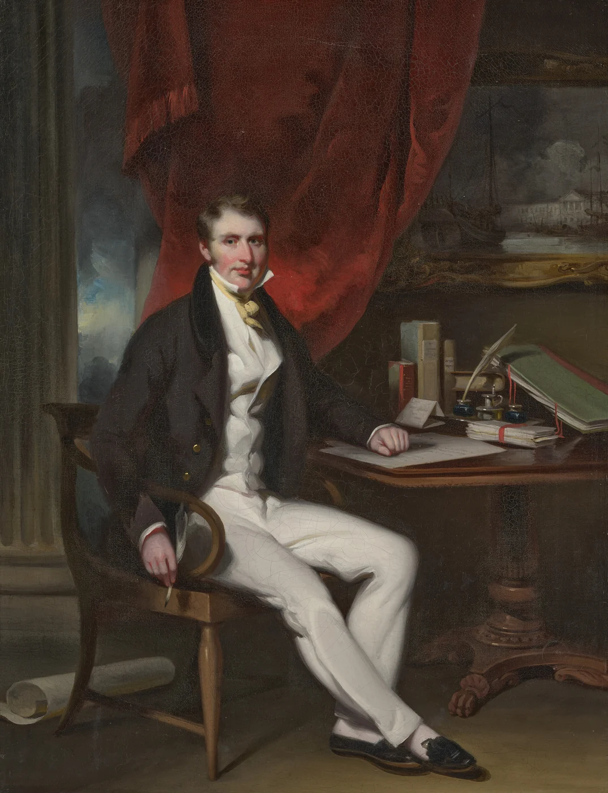
William Jardine (1784–1843), co-founder of the opium firm Jardine, Matheson, painted by George Chinnery before 1843. Public domain, Wikimedia Commons.
To the British superintendent of trade, Lin's act was an affront to British dignity and cause enough for war.
The British saw China as out of step with a world of "civilized" free trade, envoys, and treaties.
Urged on by opium merchants such as William Jardine, Britain sent about forty-eight ships and 4,000 men, who arrived in June 1840.
In Parliament, the young Gladstone called it a war "more unjust in its origin" than any he knew.
Sources: Ebrey, Ch. 18, p. 317; Elliot's name, Jardine's role and dates, the size of the 1840 fleet (MIT Visualizing Cultures), and Gladstone's 1840 speech.
Q3 story · The China coast · 1840–1841
The Fleet Sailed North, and Both Courts Rejected the First Deal
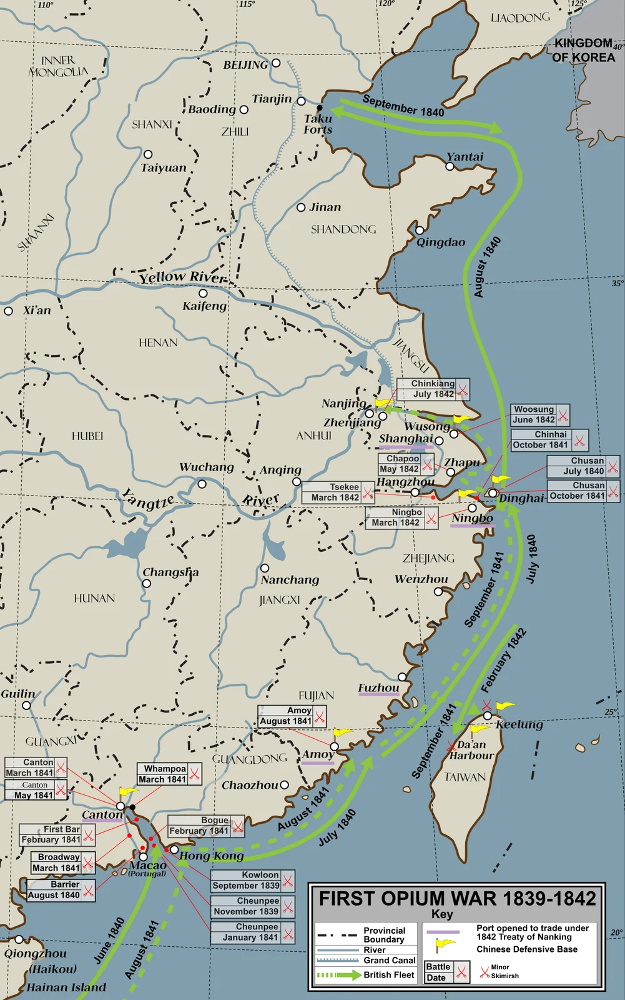
The First Opium War, 1839–1842: routes, battles, and the treaty ports. Map by Philg88, CC BY 4.0, Wikimedia Commons.
Avoiding Lin's defenses at Guangzhou, the British occupied Zhoushan island and blockaded Ningbo in July 1840, then sailed to the forts guarding Tianjin.
In January 1841 the Qing negotiator Qishan agreed to cede Hong Kong, pay $6 million, and accept equal official contact.
Daoguang had dismissed Lin in 1840 and later exiled him to Ili in the far northwest; now he had Qishan arrested and condemned.
London rejected the deal too, recalled Elliot, and sent a larger force under Henry Pottinger.
Sources: Ebrey, Ch. 18, p. 317; Zhoushan, Ningbo, and Tianjin in 1840, the Convention of Chuenpi (January 1841), Lin's dismissal and exile to Ili, Qishan's sentence, and Pottinger. Map: Philg88, Wikimedia Commons.
Q3 story · Anson's Bay, the Pearl River · 7 January 1841
At Anson's Bay in January 1841, One Iron Steamship Wrecked a Fleet of War Junks
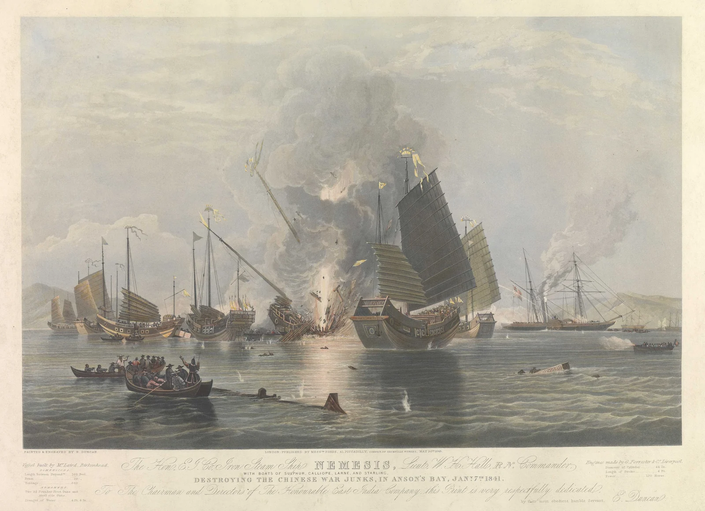
The East India Company's iron steamship Nemesis destroying Chinese war junks in Anson's Bay, 7 January 1841. Edward Duncan, 1843, Royal Museums Greenwich. Public domain, Wikimedia Commons.
The Qing had no navy to match Britain's warships and new shallow-draft steamers, which could sail up rivers.
On 7 January 1841, British troops stormed the Chuenpi forts at the mouth of the Pearl River.
The iron steamship Nemesis then entered shallow Anson's Bay and attacked about fifteen war junks; its first rocket blew one up.
Eleven junks were destroyed; for the whole day's fighting, Qing records counted 277 killed and 467 wounded, the British 38 wounded.
Sources: Ebrey, Ch. 18, p. 318; the battle of 7 January 1841 (W. H. Hall and W. D. Bernard, Narrative of the Voyages and Services of the Nemesis, 1844; Mao Haijian, The Qing Empire and the Opium War, 2016). Image: Royal Museums Greenwich.
Q3 story · Qing armies · 1840s
On Land, Swords and Matchlocks Faced Well-Drilled British Musket Volleys
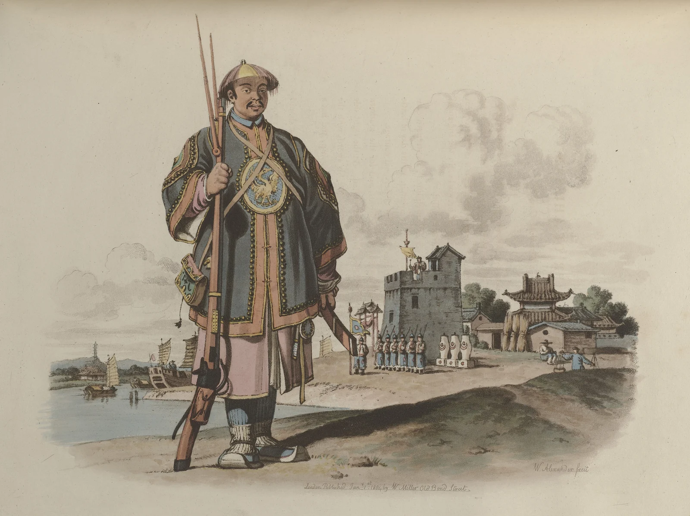
"A Soldier of Chu-San, armed with a Matchlock Gun," from William Alexander's The Costume of China, 1805, drawn during the Macartney embassy. Wellcome Collection, CC BY 4.0, Wikimedia Commons.
Even on land, Qing forces were no match for British troops.
British infantry carried muskets that fired faster and more reliably, some with new percussion locks that worked even in rain.
Most Chinese and Manchu soldiers fought with swords, spears, clubs, and arrows.
The few with firearms had matchlock muskets, each load of gunpowder lit by hand.
Sources: Ebrey, Ch. 18, p. 318. Image: Wellcome Collection.
Q3 story · Guangzhou to the Yangzi · 1841–1842
A Larger British Force Took the Coastal Cities, Then Sailed Up the Yangzi Toward Nanjing
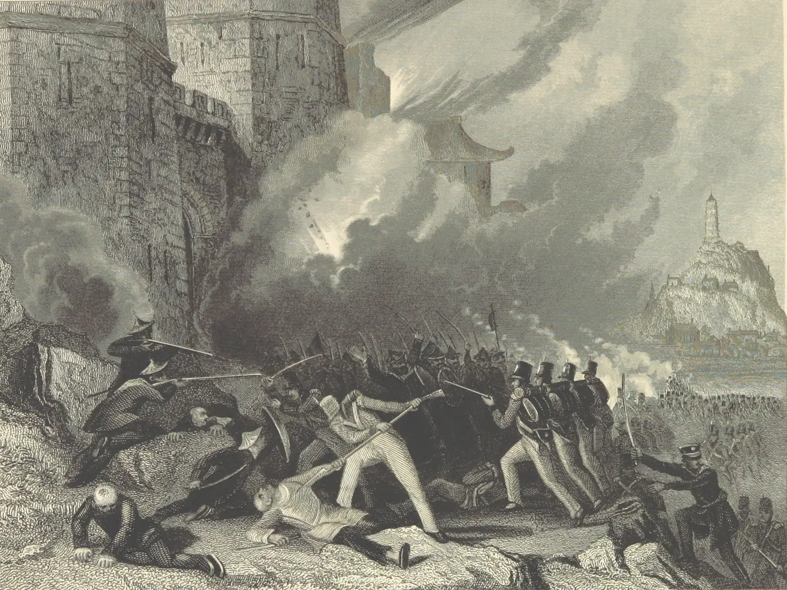
British troops capture Chin-Keang-Foo (Zhenjiang on the Yangzi, July 1842), engraving after Thomas Allom. Public domain, Wikimedia Commons.
In May 1841 British forces attacked Guangzhou, and Qing officials paid $6 million to make them withdraw.
A larger force under Henry Pottinger then took Xiamen, Zhoushan, and Ningbo in 1841.
In 1842 it took Zhapu and Shanghai and sailed up the Yangzi River toward Nanjing.
In July it stormed Zhenjiang, where the Grand Canal meets the Yangzi, cutting the grain route to Beijing.
Sources: Ebrey, Ch. 18, p. 317. Image: after Thomas Allom.
Q3 story · Zhapu and other garrisons · 1842
Dozens of Qing Officers Took Their Own Lives When They Could Not Repel the British
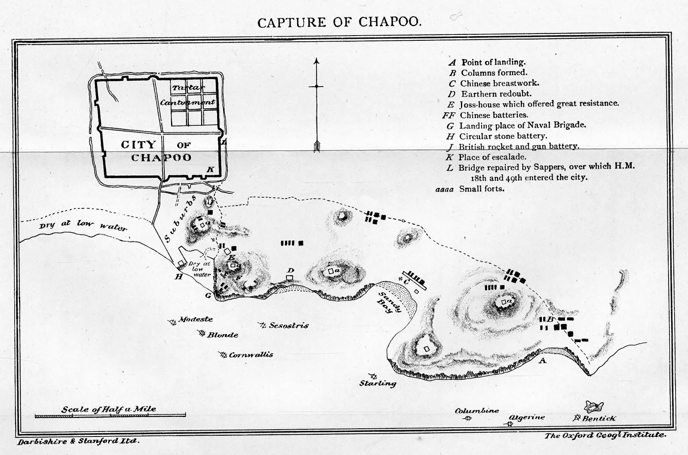
British plan of the capture of Zhapu (Chapoo), the Manchu garrison port near Hangzhou, May 1842; published 1903. Public domain, Wikimedia Commons.
Dozens of Qing officers, both Manchu and Chinese, killed themselves when they saw they could not repel the British.
At the banner garrison of Zhapu, many who survived the fighting took their own lives afterward.
For them, failing to hold their post meant failing in loyalty to the dynasty.
Sources: Ebrey, Ch. 18, pp. 317, 319. Image: British plan of Zhapu.
Q3 story · Aboard HMS Cornwallis, Nanjing · 29 August 1842
With British Guns at Nanjing, the Qing Signed a Treaty Aboard a British Warship
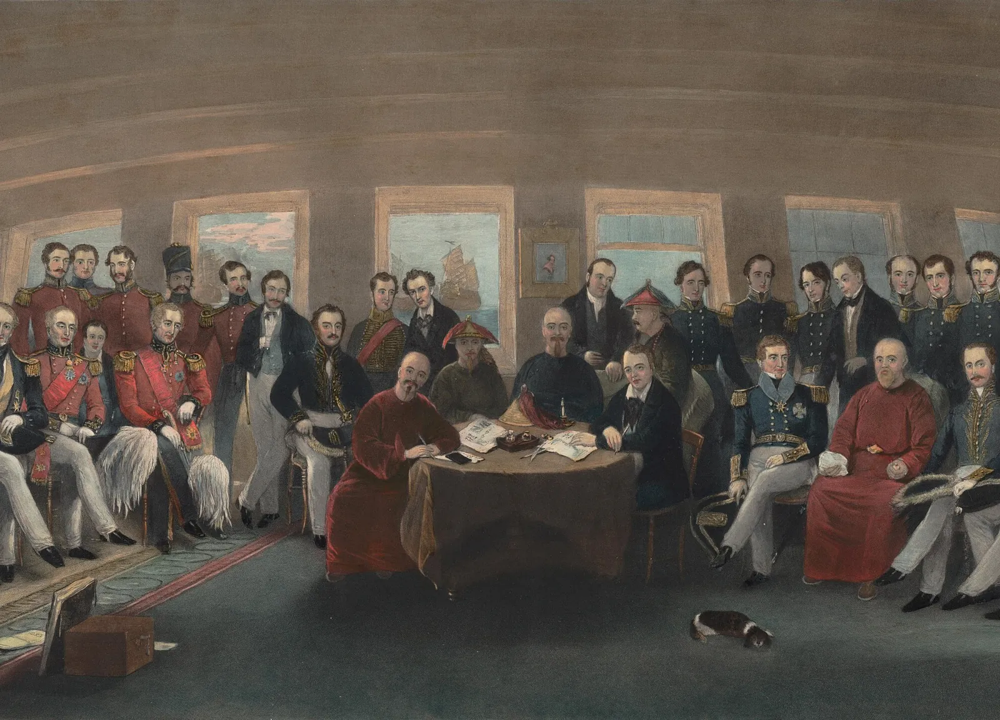
The Signing and Sealing of the Treaty of Nanking, after Captain John Platt, engraved by John Burnet, 1846 (detail). Public domain, Wikimedia Commons.
At this point, the Qing government had no choice but to capitulate.
The Treaty of Nanjing was signed in 1842, aboard the British warship Cornwallis off Nanjing.
The Qing envoys Qiying, Yilibu, and Niu Jian faced Sir Henry Pottinger at a table crowded with British officers.
The textbook calls it a treaty "concluded at gunpoint."
Sources: Ebrey, Ch. 18, p. 317. Image: after John Platt, 1846.
Q3 story · The treaty terms · 1842–1843
The Treaty Opened Five Ports to British Merchants and Consuls, Charged $21 Million, and Ceded Hong Kong
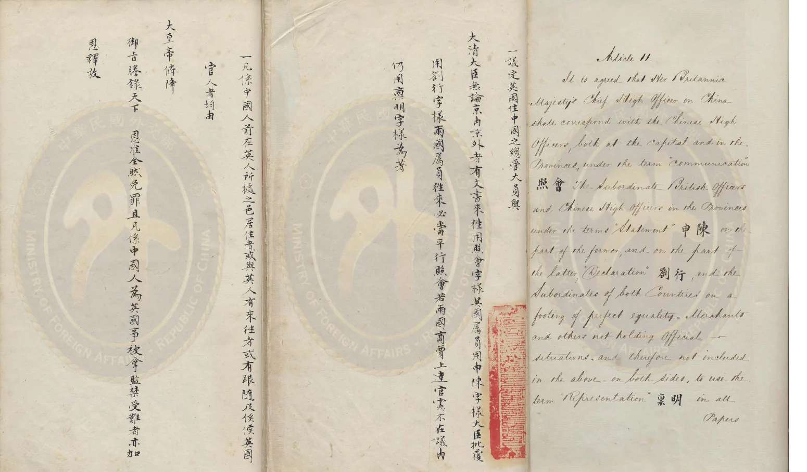
Pages of the Treaty of Nanjing, 1842, in English and Chinese, National Palace Museum, Taipei. Public domain, Wikimedia Commons.
Five ports opened to British trade and residence, each with a British consul: Guangzhou, Xiamen, Fuzhou, Ningbo, and Shanghai.
China paid 21 million silver dollars for the destroyed opium, the hong merchants' debts, and Britain's war costs.
Hong Kong island was ceded to Britain "in perpetuity," and the hong merchants' monopoly at Guangzhou was abolished.
A tariff schedule agreed in 1843 set duties at about 5 percent, which China could not change on its own.
Sources: Ebrey, Ch. 18, p. 317. Image: National Palace Museum, Taipei.
Q3 concept · Extraterritoriality · 1842–1844
Concept: Extraterritoriality Put British Subjects Beyond Chinese Law
Concept
Extraterritoriality
The right of foreigners living in a country to be tried by their own country's law and courts instead of the local ones. In China, British subjects were answerable only to British law.
Under trade regulations and a supplementary treaty of 1843, British subjects in China answered only to British law.
This held even in disputes with Chinese people.
A Chinese person harmed by a British subject had to seek justice from a British consul.
Chinese living in Britain had no matching right.
Sources: Ebrey, Ch. 18, p. 317.
Q3 concept · Most favored nation · 1843–1844
Concept: The Most-Favored-Nation Clause Meant One Power's Gain Was Every Power's Gain
Concept
Most favored nation
A treaty clause promising that any privilege a country grants to one foreign nation will automatically be granted to the nation holding the clause too.
In the 1843 Treaty of the Bogue, China agreed that any privilege it granted another nation would go to Britain too.
In 1844 the United States and France signed their own treaties with China.
They gained the same clause, so each new concession spread to all the powers.
China, in return, gained no such rights in their countries.
Sources: Ebrey, Ch. 18, p. 317; the Treaty of the Bogue (1843), the treaties of Wangxia and Whampoa (1844), and the spread of the clause.
Q3 concept · Unequal treaty · 1842
Concept: Concluded at Gunpoint, the Treaty Gave Benefits to Britain but Not to China
Concept
Unequal treaty
A treaty imposed by force that gives one side rights and benefits without giving the same in return. Chinese writers later used the term for the whole series of treaties that began at Nanjing.
The Treaty of Nanjing was concluded at gunpoint.
It provided benefits for Britain but not for China, making it "unequal."
With the treaties of 1843–1844, China lost control of its tariffs, its courts over foreigners, and an island, and got nothing in return.
The textbook's verdict: "Western imperialism had its first victory in China."
Sources: Ebrey, Ch. 18, p. 317.
Q3 story · The Qing court · 1842–1850
At Court, a Peace Party and a War Party Fought, and in 1850 the New Emperor Recalled Lin
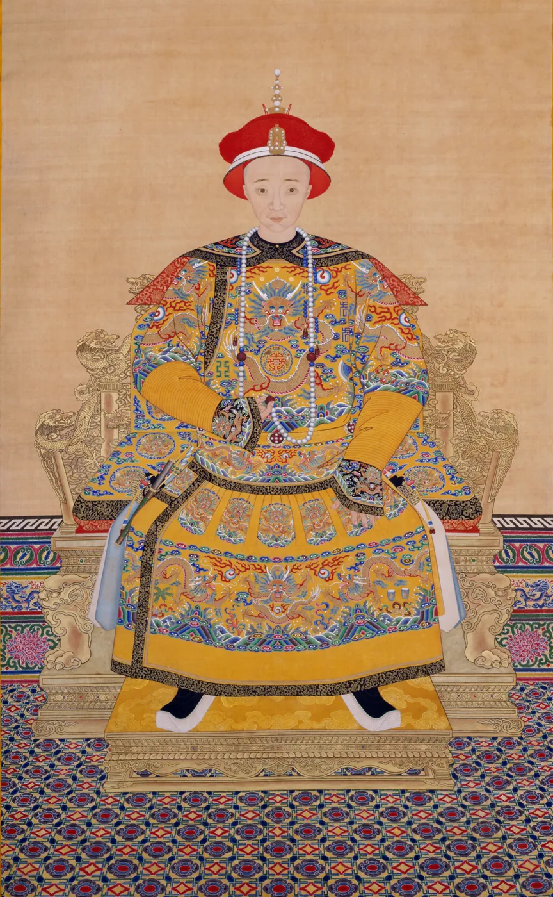
The Xianfeng emperor (r. 1850–1861) in court robes, Palace Museum, Beijing. Public domain, Wikimedia Commons.
The Daoguang court split into a peace party, led by the Manchu chancellor Mujangga, and a war party of Chinese degree holders who had backed Lin.
The quarrel echoed the Song court's debates over peace and war with northern states · Ch. 8 L1 · peace-1004 ↗
In 1850 the new emperor dismissed Mujangga and brought back Lin Zexu, vowing no more concessions.
The court kept refusing foreign diplomats in Beijing and fell short on the trade clauses.
Sources: Ebrey, Ch. 18, p. 318; Ch. 8 L1 for the Song debates.
Reading Guide · Review Question 3
Reading Guide · Review Question 3
Review Question 3
What were the causes and consequences of the First Opium War, and why was the Treaty of Nanjing considered an unequal treaty?
Sources: Ebrey, Ch. 18, p. 314; Ch. 16 L3 for the eighteenth-century population story.
Pierian Spring · Q1 story · The farming heartland · 1800–1850
Three Hundred Million People Became Four Hundred Million, and Farms Grew Smaller
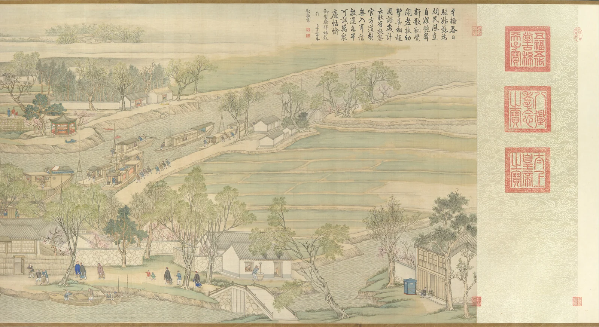
Fields and villages in the lower Yangzi region, from Xu Yang's The Qianlong Emperor's Southern Inspection Tour, Scroll 6, 1770. Metropolitan Museum of Art, CC0, Wikimedia Commons.
China had about 300 million people around 1800, and about 400 million by 1850.
Farmers worked the land harder, and others moved to less crowded regions.
As farms grew smaller and surplus labor pushed wages down, the standard of living fell behind Europe's.
When all the best land was taken, quarrels over water rights and tenancy increased.
Sources: Ebrey, Ch. 18, pp. 314–315. Image: Metropolitan Museum of Art.
Pierian Spring · Q1 story · Roads, rivers, and cities · 1800s
Hard Times Meant Fewer Daughters, Unmarried Sons, and a Floating Population on the Roads
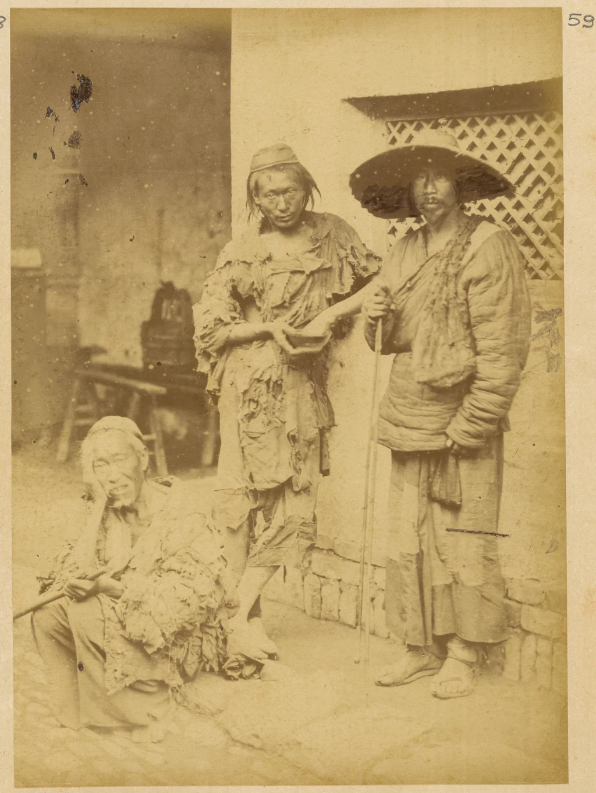
A group of beggars in Beijing, photographed in 1874 by Boiarskii. World Digital Library, public domain, Wikimedia Commons.
Hard times led to more female infanticide, and so to a shortage of marriageable women.
Many young men took to the road and became a floating population of unemployed.
They worked as boatmen, charcoal burners, and night-soil collectors, or as sedan carriers, beggars, or thieves.
Poverty fed the traffic in women: poor families sold their daughters for cash.
Sources: Ebrey, Ch. 18, p. 315.
Pierian Spring · Q1 story · The county yamen · 1800s
The Population Doubled and Tripled, but the Number of Counties Stayed the Same
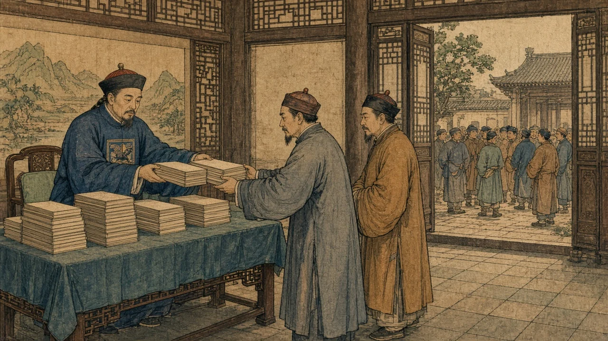
AI-generated illustration in a woodblock-print style, made for this deck: a county magistrate hands the tax registers to local gentry, while villagers wait in the courtyard of the yamen. An interpretation, not a historical source.
Population growth added to the burdens on local government.
Although the population doubled and tripled, the number of counties and county officials stayed the same.
Magistrates often had to turn to the local elite for help.
Some even turned tax collection over to them.
Sources: Ebrey, Ch. 18, p. 315. Image: AI-generated interpretation.
Pierian Spring · Q1 story · The Daoguang court · 1821–1850
The Frugal Daoguang Emperor Cut Every Cost, Yet the Treasury Kept Running Short
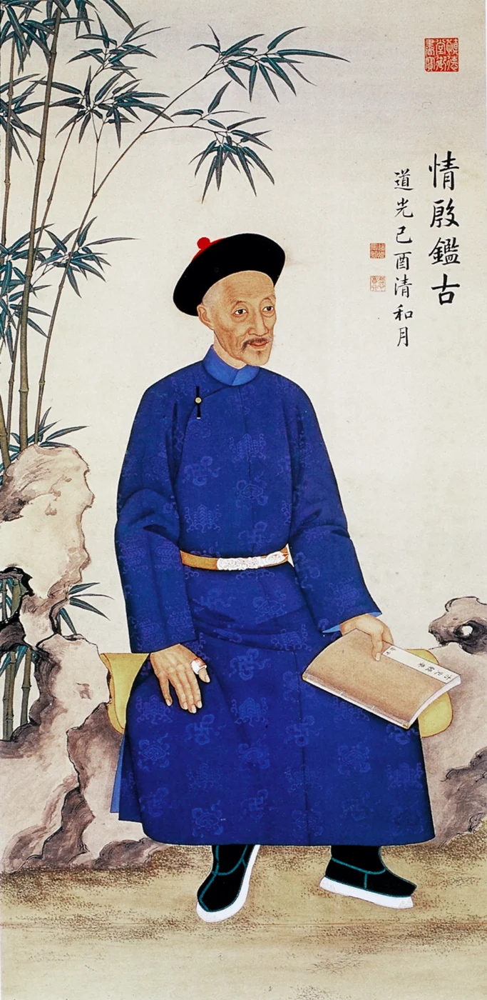
The Daoguang emperor at leisure in a garden, Qing court painting, Palace Museum, Beijing. Public domain, Wikimedia Commons.
Under Qianlong, the government had had the resources to help the poor.
In the 1800s, even a determined emperor like Daoguang was chronically short of revenue.
He set an example of frugality at court and told officials to cut every possible cost.
Yet the fiscal situation steadily worsened.
Sources: Ebrey, Ch. 18, p. 315.
Pierian Spring · Q1 story · The Grand Canal · 1824–1855
In 1824 Floods Silted the Grand Canal, and the Tax Grain Began to Go by Sea
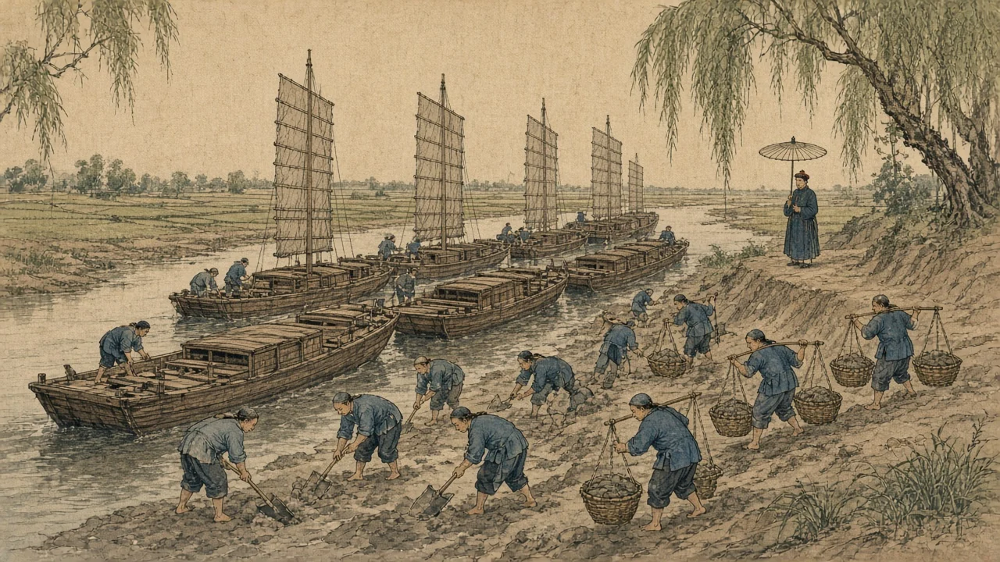
AI-generated illustration in a woodblock-print style, made for this deck: grain barges stranded in silt on the Grand Canal in the 1820s, as boatmen dig and an official watches from the bank. An interpretation, not a historical source.
More than fifty thousand boatmen and laborers moved the tax grain up the canal to Beijing.
Late in 1824 floods broke the dikes of Hongze Lake and silted the canal where it crossed the Yellow River; grain shipments nearly stopped.
In 1826 the court tried shipping grain by sea from Shanghai to Tianjin, and over the next decades more grain went by sea, putting boatmen out of work.
After the Yellow River shifted north in 1855, much of the canal became impassable; jobless boatmen joined the Nian rebellion · Ch. 14 L1 · grand-canal ↗
Sources: Ebrey, Ch. 18, pp. 315–316; Ch. 14 L1 for the Ming canal; the 1824 dike breach, the 1826 sea transport, Qishan's role, and the 1855 shift of the Yellow River (Jane Kate Leonard, 1996 and 2019). Image: AI-generated interpretation.
Pierian Spring · Q1 story · The banner garrisons · 1800s
The Banners Could No Longer Fight, but the Emperor Could Not Disband Them
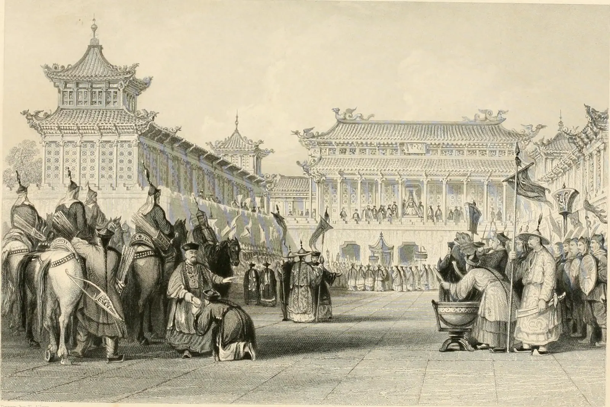
Emperor Taou-Kwang reviewing his guards, engraving after Thomas Allom, 1843. A British artist's imagined scene, not an eyewitness view. Public domain, Wikimedia Commons.
The hereditary banner forces were no longer effective in war.
To fight rebels, the government turned to local militias and the Chinese professional army, the Green Standard.
The banners were so tied to Manchu identity that the emperor could not disband them, as the Ming had disbanded its soldiers.
His best hope was to keep bannermen from becoming beggars, bandits, opium smugglers, or addicts · Ch. 16 L2 · banner-decline ↗
Sources: Ebrey, Ch. 18, p. 315; Ch. 16 L1–L2 for the banner system. Image: after Thomas Allom, 1843.
Reading Guide · Review Question 1
Reading Guide · Review Question 1
Review Question 1
How did rapid population growth contribute to the economic and fiscal problems facing Qing China during the early nineteenth century?
Guancheng Came Home to Zhapu and Wrote a Record So the Dead Would Be Honored
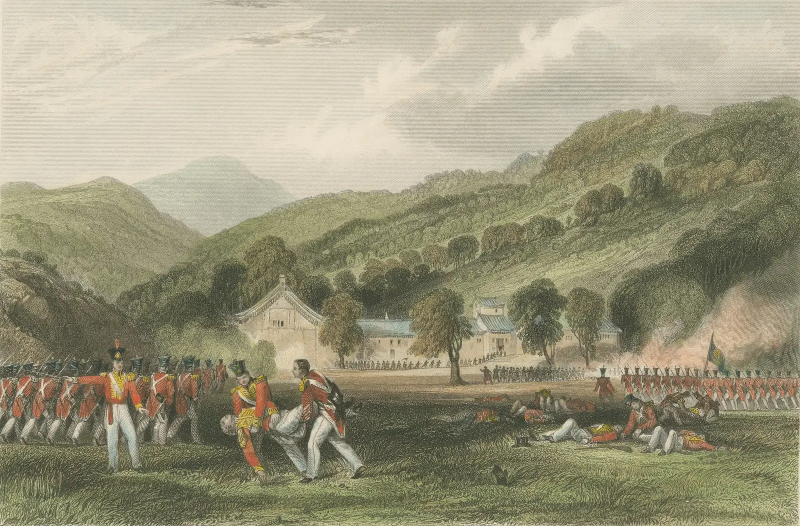
Joss House, Chapoo: British troops attack a temple held by Qing defenders at Zhapu, May 1842. Engraving after Thomas Allom from a British officer's sketch, 1843. Public domain, Wikimedia Commons.
Guancheng was a Manchu bannerman from the Zhapu garrison who rose by passing the examinations.
He came home in 1842 to find his garrison devastated by the British attack.
Though ill, he wrote and printed an account of the bannermen's heroism, to win help for survivors and honor for the dead.
After he died in early 1843, his son issued a revised "Record of Martyrs."
Sources: Ebrey, Ch. 18, p. 319; Guancheng's words trans. Pamela Kyle Crossley, Orphan Warriors (1990), p. 115, as quoted in Ebrey.
Sources and image credits
The Stories in This Deck Rest on These Sources
Main source
Patricia Buckley Ebrey, A History of China, Chapter 18, "China in Decline (1800–1900)," pp. 314–319. All page references in this deck are to these pages.
Guancheng, record of the defense of Zhapu, trans. Pamela Kyle Crossley, Orphan Warriors: Three Manchu Generations and the End of the Qing World (1990), p. 115, as quoted in Ebrey (slide ii).
Further reading beyond Ebrey
Ssu-yü Teng and John K. Fairbank, China's Response to the West: A Documentary Survey, 1839–1923 (1954), Lin Zexu's letter to Queen Victoria (slide j).
Hsin-pao Chang, Commissioner Lin and the Opium War (1964) (slides b, h–j, m).
Julia Lovell, The Opium War: Drugs, Dreams and the Making of China (2011) (slides l–s, w).
Mark C. Elliott, The Manchu Way (2001), on the Zhenjiang and Zhapu garrisons (slides p–q).
Pamela Kyle Crossley, Orphan Warriors (1990) (slides q, ii).
Peter Ward Fay, The Opium War, 1840–1842 (1975), on the Nemesis, the treaty signing, and the five ports (slides n, r–s).
Jane Kate Leonard, Controlling from Afar: The Daoguang Emperor's Management of the Grand Canal Crisis, 1824–1826 (1996), and Stretching the Qing Bureaucracy in the 1826 Sea Transport Experiment (2019) (slide ff).
W. H. Hall and W. D. Bernard, Narrative of the Voyages and Services of the Nemesis from 1840 to 1843 (1844); Mao Haijian, The Qing Empire and the Opium War (2016) (slide n).
Peter C. Perdue, "The First Opium War," MIT Visualizing Cultures (2011), for the 1840 fleet and the campaign of 1840 (slides l–m).
The Treaty of Nanking (1842), the General Regulations of Trade (1843), and the Treaty of the Bogue (1843), texts in William F. Mayers, Treaties Between the Empire of China and Foreign Powers (1877 and later editions) (slides s–u).
Images (real; via Wikimedia Commons unless noted)
a: William John Huggins, The Opium Ships at Lintin, China, 1824. Public domain.
b: Commissioner Lin and the Destruction of the Opium in 1839, Chinese artist, 1800s, Hong Kong Museum of Art. Public domain.
c: Esther Speakman, Houqua, about 1843, Metropolitan Museum of Art. CC0.